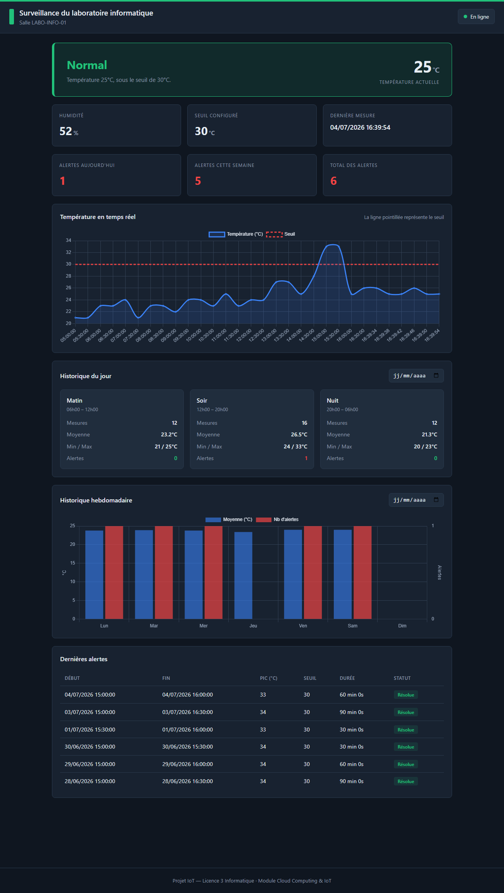
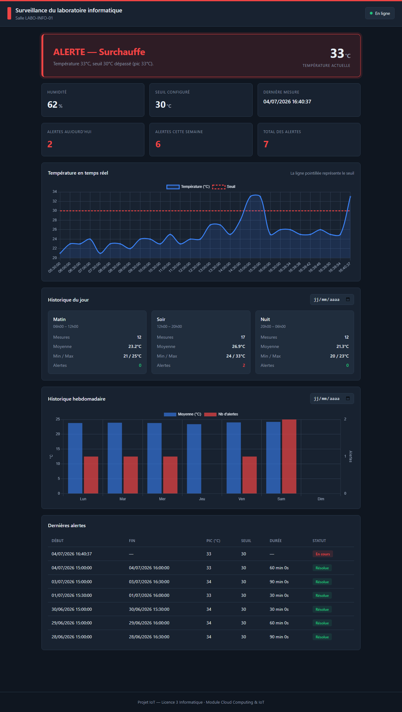

Les laboratoires informatiques regroupent de nombreux équipements (ordinateurs, serveurs, matériel réseau) qui dégagent une quantité importante de chaleur en fonctionnement. En cas de panne de la climatisation ou de début de surchauffe électrique, la température peut rapidement dépasser un seuil critique et endommager le matériel.
Problématique : comment concevoir et déployer une solution IoT capable de surveiller en continu l'environnement d'un laboratoire, de détecter automatiquement l'atteinte d'un seuil, de déclencher une alerte locale et distante, d'enregistrer les données dans le Cloud et de présenter des historiques selon plusieurs périodes ?
L'objectif est de réaliser une solution IoT complète permettant de collecter, transmettre, stocker, analyser et visualiser des données environnementales en temps réel à partir d'une carte ESP32.
Les fonctionnalités obligatoires retenues sont :
La grandeur physique surveillée est la température (avec l'humidité en complément). Le capteur retenu est le DHT11, un capteur numérique de température et d'humidité, standard, stable et adapté aux projets IoT éducatifs sur ESP32. Contrairement à un capteur purement analogique, il fournit directement des valeurs numériques exploitables et une seconde grandeur (l'humidité) qui enrichit le suivi.
Une salle informatique en fonctionnement normal se situe autour de 20–25 °C. Nous fixons le seuil critique à 30 °C : au-delà, on considère qu'il existe une surchauffe anormale (climatisation en panne ou échauffement électrique) mettant en danger le matériel. Afin d'éviter que l'alerte ne « clignote » lorsque la valeur oscille autour du seuil, une hystérésis de 2 °C est appliquée : l'alerte se déclenche à 30 °C mais ne s'arrête qu'en dessous de 28 °C. Le seuil est configurable et doit être adapté à la température ambiante de la salle.
| Couche | Technologies |
|---|---|
| Embarqué | ESP32, C/C++ (Arduino IDE), DHT sensor library (Adafruit), WiFi.h, HTTPClient.h |
| Backend (API) | Node.js, Express.js, Mongoose, dotenv, cors |
| Base de données | MongoDB Atlas (Cloud) |
| Frontend | HTML5, CSS3, JavaScript (Vanilla), Chart.js |
| Déploiement | Render (API + dashboard), MongoDB Atlas |
| Outils | Git / GitHub, Postman |
La solution suit une chaîne complète de bout en bout : le capteur mesure, l'ESP32 transmet en WiFi via HTTP, l'API traite et stocke dans MongoDB, et le tableau de bord consulte l'API pour afficher les données.
┌──────────┐ HTTP POST ┌───────────────┐ Mongoose ┌───────────────┐
│ ESP32 │ ─────────────► │ API Node.js │ ───────────► │ MongoDB Atlas │
│ + DHT11 │ (WiFi) │ (Express) │ │ (Cloud) │
│ + Buzzer │ └───────┬───────┘ └───────────────┘
│ + LEDs │ │ HTTP (interrogation)
└──────────┘ ▼
┌───────────────┐
│ Dashboard │
│ HTML/CSS/JS │
│ + Chart.js │
└───────────────┘
ESP32 Composants
┌───────────────┐
│ 3V3 ├──────────────────► DHT11 VCC (+)
│ GND ├──────┬───────────► DHT11 GND (-)
│ GPIO23 ├──────│───────────► DHT11 DATA
│ GPIO19 ├──────│───────────► Buzzer (+) ─── GND ► Buzzer (-)
│ GPIO18 ├──[220Ω]──────────► LED ROUGE (+) ─ GND ► (-)
│ GPIO5 ├──[220Ω]──────────► LED VERTE (+) ─ GND ► (-)
└───────────────┘
| Composant | Broche ESP32 | Remarque |
|---|---|---|
| DHT11 — VCC | 3V3 | Le DHT11 est stable en 3.3 V |
| DHT11 — DATA | GPIO 23 | Résistance pull-up 10 kΩ (souvent intégrée au module) |
| Buzzer (+) | GPIO 19 | Buzzer actif |
| LED rouge (alerte) | GPIO 18 | + résistance 220 Ω |
| LED verte (normal) | GPIO 5 | + résistance 220 Ω |
Les broches ont été choisies pour éviter les « strapping pins » (comme GPIO 12) qui peuvent perturber le démarrage de l'ESP32.
Deux collections sont utilisées, ce qui rend le calcul des historiques simple et efficace.
measurements — toutes les mesures| Champ | Type | Rôle |
|---|---|---|
| deviceId | texte | Identifiant de la salle (ex. LABO-INFO-01) |
| temperature | nombre | Température mesurée (°C) |
| humidity | nombre | Humidité (%) |
| threshold | nombre | Seuil au moment de la mesure |
| state | texte | NORMAL ou ALERT |
| timestamp | date | Horodatage de la mesure |
alertEvents — les épisodes d'alerte| Champ | Type | Rôle |
|---|---|---|
| deviceId | texte | Salle concernée |
| startTime | date | Heure de début de l'alerte |
| endTime | date | Heure de fin (null si en cours) |
| thresholdAtEvent | nombre | Seuil déclencheur |
| triggerValue | nombre | Température ayant déclenché l'alerte |
| maxValue | nombre | Pic de température de l'épisode |
| status | texte | ONGOING ou RESOLVED |
alertEvents, créé au dépassement et clôturé au retour à la
normale. C'est ce qui répond à l'exigence « éviter plusieurs alertes
identiques » et permet de compter facilement les alertes par jour.
Le système repose sur une machine à états à deux états (NORMAL et ALERT) avec hystérésis, implémentée à la fois sur l'ESP32 (pour l'alerte locale immédiate) et dans l'API (source de vérité pour l'enregistrement).
NORMAL ──(température ≥ 30 °C)──────────────► ALERT
▲ │
└──────────(température < 28 °C)─────────────┘
zone morte [28 ; 30[ : pas de changement d'état
Tant que l'état ne change pas, aucune alerte supplémentaire n'est générée : seul le pic de température de l'épisode est mis à jour.
L'API expose les points d'entrée suivants (les écritures sont protégées par une clé API) :
| Méthode | Route | Description |
|---|---|---|
| POST 🔒 | /api/measures | Enregistrer une nouvelle mesure |
| GET | /api/measures | Lister les mesures (filtres date, période, état) |
| GET | /api/measures/latest | Dernière mesure + état courant |
| GET | /api/alerts | Liste des évènements d'alerte |
| GET | /api/alerts/active | Alerte(s) en cours |
| GET | /api/alerts/resolved | Retours à l'état normal |
| GET | /api/history/daily | Historique journalier : matin / soir / nuit |
| GET | /api/history/weekly | Historique hebdomadaire |
| GET | /api/history/monthly | Historique mensuel |
Les réponses sont normalisées au format JSON
({ success, data, meta }) et les codes d'erreur adaptés sont
retournés : 201 (créé), 400 (requête invalide), 401 / 403 (authentification),
404 (introuvable), 500 (erreur serveur).
| Période | Plage horaire |
|---|---|
| Matin | 06h00 – 12h00 |
| Soir | 12h00 – 20h00 |
| Nuit | 20h00 – 06h00 |
Le tableau de bord affiche en temps réel la dernière mesure, le seuil, l'état, les compteurs d'alertes (du jour, de la semaine et au total), ainsi que les historiques. Il distingue clairement cinq situations : état normal (vert), état d'alerte (rouge), signal perdu (mesure trop ancienne), aucune donnée et perte de connexion à l'API. L'interface est responsive : sur mobile, une barre de navigation fixe en bas d'écran permet d'atteindre chaque section.


x-api-key.
Sans clé valide, la requête est rejetée (401 / 403).
.env (jamais versionné) et dans les variables
d'environnement de la plateforme d'hébergement. Seul un modèle
.env.example est publié.
L'ensemble de la solution est déployé sur des services gratuits :
| Élément | Plateforme | URL |
|---|---|---|
| Base de données | MongoDB Atlas | cluster0.susqbgt.mongodb.net / base labo_iot |
| API | Render (Web Service) | https://projet-cloud-iot.onrender.com |
| Tableau de bord | Render (Static Site) | https://projet-iot-dashboard.onrender.com |
Le code est versionné sur GitHub ; chaque push déclenche
automatiquement un redéploiement sur Render (intégration continue).
La solution a été validée à plusieurs niveaux :
| Difficulté | Solution apportée |
|---|---|
| Éviter les alertes répétées autour du seuil | Machine à états avec hystérésis de 2 °C (déclenchement à 30 °C, arrêt à 28 °C) |
| Cohérence de l'état entre l'ESP32 et la base | L'API recalcule l'état à partir du précédent : elle est la source de vérité |
| Pilote USB (CP2102) de l'ESP32 manquant sous Windows | Installation du pilote CP210x de Silicon Labs, puis détection correcte du port série |
| Communication HTTPS de l'ESP32 vers l'API déployée | Utilisation de WiFiClientSecure pour l'envoi sécurisé des mesures |
| Seuil non adapté à une salle déjà chaude (l'alerte ne se coupait pas) | Calibration du seuil au-dessus de la température ambiante (seuil configurable) |
| Mise en veille de l'hébergement gratuit (Render) | Connaissance du délai de réveil et « ping » keep-alive périodique |
Ce projet a permis de concevoir, développer et déployer une solution IoT complète et fonctionnelle, couvrant l'ensemble de la chaîne : acquisition par capteur, traitement embarqué, transmission réseau, stockage dans le Cloud, et visualisation à distance. Les exigences du cahier des charges (seuil configurable, alerte locale et distante, anti-répétition, historiques, déploiement Cloud, sécurité minimale) sont satisfaites, et la chaîne a été démontrée de bout en bout avec le matériel réel.
Plusieurs améliorations pourraient être envisagées :
deviceId).| Livrable | Emplacement |
|---|---|
| Code source ESP32 | dossier esp32/ |
| Code source API Node.js | dossier api/ |
| Modèle de données MongoDB | api/models/ |
| Tableau de bord Web | dossier dashboard/ |
| Fichier .env.example | api/.env.example |
| Schéma de câblage | esp32/README.md |
| Collection Postman | docs/Postman_Collection.json |
| Guide de déploiement | docs/DEPLOIEMENT.md |
| Lien de l'API déployée | https://projet-cloud-iot.onrender.com |
| Lien du tableau de bord | https://projet-iot-dashboard.onrender.com |
| Dépôt GitHub | github.com/serignefalloubousso99-dot/Projet-Cloud-IOT |